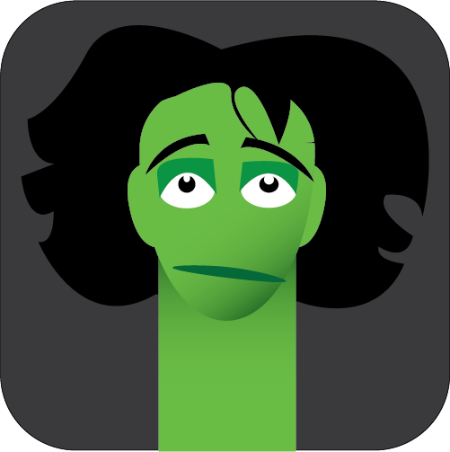

My character is named Wormiguel. He looks like a 5 foot 7 inch tall inchworm with a head of unkempt hair on his head. He came from the ground, where plenty of other worms live. He was just an average worm who kept growing until being human sized. That is when he decided to assimilate to the humans. He works and lives in a quieter part of town where there isn’t much noise or activity, although it is a very tight community. He enjoys company, whether that be his neighbors or coworkers. Wormiguel’s a pretty chill guy. He’s not very confrontational but he rarely needs to be. A dependable guy, but sometimes struggles to keep himself together. He can climb up things as a normal inchworm can, with the only real difference being he’s human sized.
